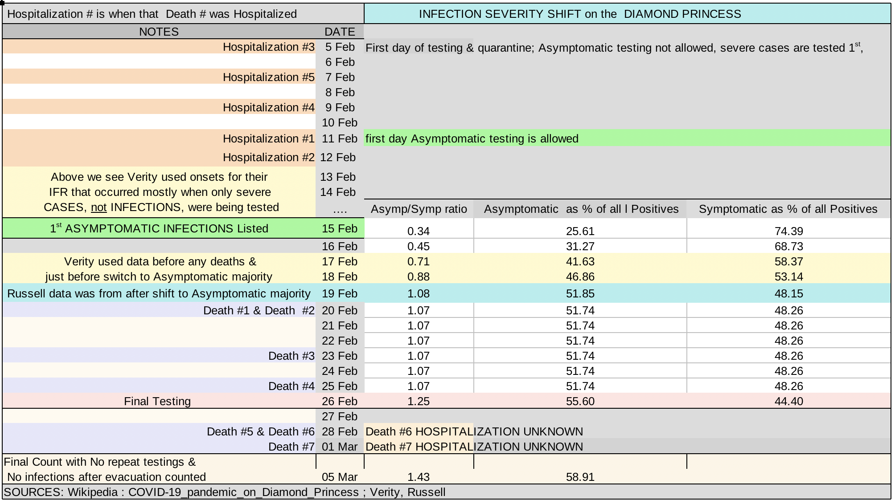
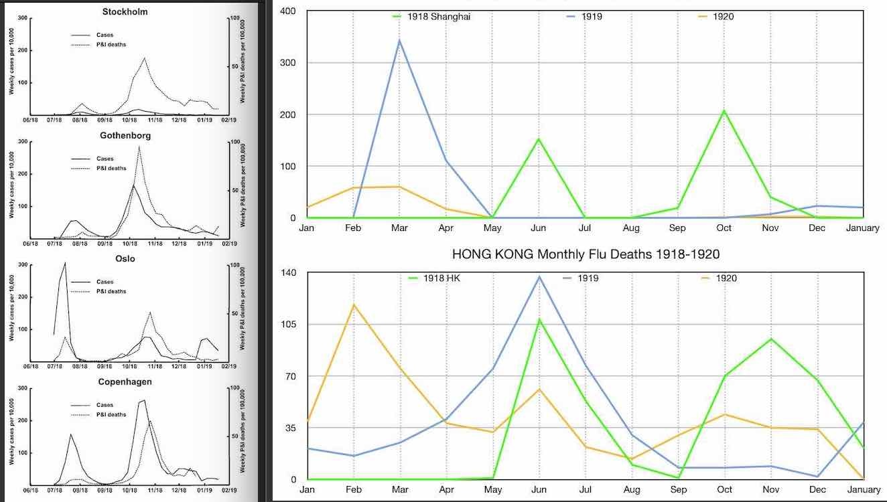
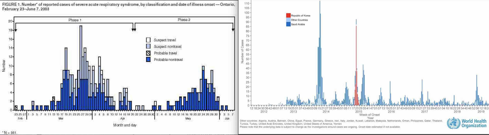
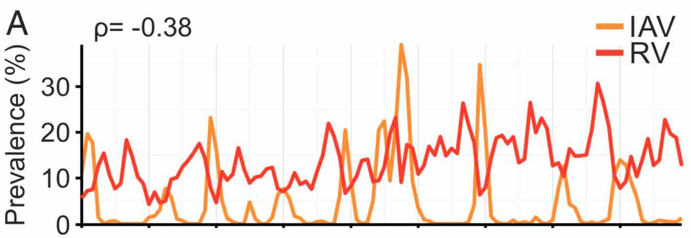

Report Number 9 was the analysis released 16 March 2020 by the Imperial College of London [1] that in combination with another paper involving some of the same authors, Neil Ferguson and Robert Verity, [36] predicted dramatic and devastating hospitalizations and deaths would happen as a result the Covid pandemic if nothing was done. So they proposed that the strict enforcement of various unproven and severe Non-Pharmaceutical Interventions (NPI) like school closings and social distancing would dramatically reduce Covid's impact, misrepresenting the affect it would have on both short and long term outcomes.
"(Neil Ferguson's) doomsday prediction of 510,000 deaths in the first wave helped convince ministers to hit the panic button and pull the curtains over society" -- The Daily Mail 23 December 2020 [4]
Report Number 9 was then used by politicians to justify lockdowns and by the media to spread panic. Yet the authors of both of those influential papers had used scientifically unsound methods to come to conclusions that did not at all accurately represent the severity of Covid 19 in order to create the appearance of the mother of all crises and encourage irrational action.
March 2021, a year after the release of Report #9, a peer-reviewed paper published in The Lancet acknowledged that: "Initial projections built worst-case scenarios that would never happen as a means of spurring leadership into action"
The centerpiece of their disinformation was the fact that instead of basing their calculations on infections as they were supposed to, they had based it solely on lab-confirmed symptomatic cases, which greatly exaggereated deaths and hospitalizations. If it had been widely known that deaths would be a small fraction of what was announced, and that those deaths would be spread across years, would anyone have panicked? Many have tried to backtrack now in a variety of ways, claiming that deaths were really estimated to be only half of the Doomsday predictions. That is easily proven wrong.
The idea that ICL was misunderstood, that they never intended to mean these high numbers would come to pass or to cause panic can be disproven. The amount of deaths they predicted as a worst case scenario, 510,000 in the UK and 2.2 million in the US, were based directly on ICL’s calculations of their infections fatality ratio for SARS-CoV-2, not on modeling of hospital capacity and access, or any NPI.
Its important to note the 2 main issues with ICL’s work: inflated deaths and time period. Remember that the public was initially told that lockdowns were to address the second point, they were not to reduce deaths directly from Covid, rather they were to spread hospitalizations and deaths out over time so that systems wouldn't be overwhelmed and there would be time to manufacture enough ventilators. NPI, like lockdowns, if they worked, would only alter transmission time and thus spread deaths out over more months, not drastically reduce the number of overall deaths from infection. Measures like increased hospital capacity would not decrease the amount of infections, it would only increase the likelihood of treatment.
Even if increased hospital capacity did decrease the amount of infections that die, that should not be reflected in the Infection Fatality Ratio (IFR). An IFR is not supposed to include interventions as a parameter. It may include calculations to compensate for whether or not infections and deaths were accurately recorded or if they were underestimated (under ascertainment), but it does not include modeling of hospital capacity. Pharmaceutical interventions and the prospect of drugs and vaccines, the only possible human interventions that could prevent deaths from infections, were not included in the modeling. Mutations of the virus were not included either, another possible way that they virus can become less deadly over time, as has happened in many other epidemics.[25][26]
One proof of this was unwittingly done by Sir David Speigelhalter. When Sir David used relative risk to compare the risk of being infected with SARS-CoV-2 to normal population mortality rates he actually proved that Neil Ferguson and the Imperial College were indeed saying that there would be 510,000 deaths, and very importantly that those death estimations were entirely based on the their calculation of the deadliness of Covid-19, on it's IFR alone, not on any other factor.
The fact that Sir David's and ICL's claims were immeditely refuted using analysis of China and the Diamond Princess cruise ship was ignored. A rough estimate of these deaths is also seen by using Imperial College’s IFR of 0.87% with their Herd Immunity Threshold of 81% of a population needing to be infected before growth would stop, applied to the United States. This amounts to 2.3 million deaths (330,000,000 * 0.81 * 0.0087) = 2.3 million), close to the 2.2 million they projected. This works because ICL's infection severity cascade model has 90% of deaths happening in a way that is affected by their IFR, so total estimates are not affected much by deaths that they had modeled differently outside of the IFR framework.
One such desperate scramble to cover their tracks and claim that the report was misinterpreted, was in StatNews May 2021 where one epidemiologist was quoted as saying: "To accurately interpret (Feruson's) modeling is to express its uncertainty".
And what an uncertainty it was. Most people would consider this level of ineptitude unacceptable. Most people who are not epidemiologists or politicians would agree that a narrow range of predictions is much more useful than a broad one, and Ferguson's were so wide-ranging and vague as to be completely useless.
This broad range of uncertainty, apparently the best Ferguson could do, was that deaths in the UK may range from anywhere between 5,600 and 550,000; Thats a range that encompasses quite a large percent of the population (0.9%), whereas others, like Dr. Michael Levitt of Stanford University, were at that same time able to calculate ranges that were many times more precise, encompassing only about 0.15% of a population, and Dr. Levitt's estimates of up to 2 months of normal death have proved very accurate.
And where and how was this incredible large and unacceptable uncertainty allegedly expressed? If any uncertainty existed it was not well communicated; there was very little uncertainty amongst experts in the media, only absolute proclamations of disaster and a choice of apocolyptic outcomes.
The media was swift and relentless in propagating this message of eminent and inescapable catastrophe, and its clear the outrageous claims of the report was used to change policy of world leaders, to gain funding for themselves and their professional field, and also just for pure profit.
March 16, 2020 respected news outlets like The New York Times, wrote that the White House had changed its plans after the ICL report.
March 17, 2020, the day after Report #9's public release, it was picked up by Reuters who reported that: 'This study (Report #9) helped change the British government’s position, according to those involved with the decision. The government said it had accelerated its plans on “the advice of the experts” and that the new measures had always been “part of the government’s action plan”'. We'll see later reasons why the lockdown plans had been in place far earlier and would be carried out regardless of whatever new scientific evidence may have arisen that contradicted lockdowns.
The same day it was reported in the Business Insider : "A report that helped convince Trump to take coronavirus seriously projected that 2.2 million people could die in the US if we don't act" and the Washington Post was saying Report #9 “helped upend U.S. and U.K. coronavirus strategies”.
“There are 2 options for Covid-19 at the moment: long-term social distancing or overwhelmed health care systems" - epidemiologist Dr. Marc Lipsitch
March 18, 2020 in StatNews internationally renowned epidemiologist Dr. Marc Lipsitch validated and reinforced the Imperial College, citing the importance of Report #9's most extreme predictions "... if we don’t apply control measures, the number of cases will keep going up exponentially beyond the already fearsome numbers we have seen."
Wrongly assuming exponential growth was a problem previously known in the epidemilogy field, [35] [37] so its somewhat surprising someone as renowned as Lipsitch would suddenly start stating exponential growth as fact.
"... we can be nearly certain that no population has reached anywhere near 1/2 of its people infected" ... This is were we will later see Verity had been very useful, as helping to artificially underestimate prevalence was a crucial part of convincing people lockdowns were necessary.
And Dr. Lipsitch in May 2020 in the New York Times continued to use one of the same the tactics that Ferguson, ICL, and many others have used since the start of the pandemic, deliberately confusing infections with cases to create panic. This intential attempt to confuse and mislead the public at a time when the large number of asymptomatic infections were well known borders on criminal. [32] [34]
March 21, 2020 The Bostan Globe said : "(Report #9) recommends drastic measures to avoid the trauma of more than 2 million deaths in the United States alone due to COVID-19.... With stronger...interventions that figure is halved ....These projections were sufficiently shocking to completely and quickly change the tone of President Trump and his Coronavirus Task Force... to recommending social distancing and reducing any gathering to fewer than 10 people."
April 2, 2020 in the professional magazine Nature, a place many layman would turn to for unbiased scientifc analysis, reported that Neil Ferguson and ICL's predictions were very viable and positively portrayed it's huge impact on policy and decision-making.
Scientists angling for promotions and more funding continued to help hype the deadliness of the pandemic.
"We will all know somebody — we will all love somebody — who will die from this disease," he says. "Eventually there won't be any blue states or red states. There won't be any blue cities or red rural areas. It'll all be COVID colored"... Dr. Michael Osterholm (May 2020)[2]
This outrageous claim that we would soon all be "Covid-colored" was made by Dr. Michael Osterholm, an epidemiologist who was rewarded for his hyperbolic statements when he was named a member of President Biden's COVID-19 Advisory Board November 2020, and is based on Dunbar's Number, the number of people one person is likely to be aquanted with, with the usual estimate being 150. [3] The US population (330 million), divided by Dunbar's number is close to the 2.2 millions of deaths predicted by Ferguson for the US. In that way he misleads and threatens that we will all lose someone "close" to us.
Sir David Spiegelhalter, a so-called expert in communicating complicated mathematical issues in a simple understandable way to the public and an associate of the SAGE group promoting lockdowns, also made great efforts to shore up support for lockdowns and show that the UK would experience a year's worth of excess death due to Covid in a short amount of time. Sir David even one-upped the Imperial College with regard to the impossibly short time period in which these deaths would occur, making it seem like the an individual's amount of risk is the same as the time period there would be a risk to society, condensing ICL's 3 months down to 2 weeks:
"So, roughly speaking, we might say that getting COVID-19 is like packing a year’s worth of risk into a week or two. Which is why it’s important to spread out the infections to avoid the NHS being overwhelmed." -- Sir David Spiegelhalter
Wherever we turned we were bombarded with these messages. We certainly seemed all but doomed, that we needed a way out. But the extremity of the pandemic was fabricated, there was no evidence that warranted equating it to an unprecedented catastrophe. There are two main areas of ICL’s projections where they distorted reality to meet their owns needs:
Both aspects of the dire and inaccurate predictions made by the Imperial College were reinforced by a widespread media campaign and have continued to be circulated throughout the pandemic by colleagues, associates and all forms of media outlets in order to induce fear and compliance in the public and policymakers.
The pandemic has been portrayed in such a misleading way and their predictions were so impossible that any plan that was implemented could end up looking like a success. The reasoning put forward for lockdowns policies were designed so that any lesser number of deaths stretched over any longer period of time would then make it appear as though the plans were effective. But the success would be a mirage, because much of the outcomes we have seen were typical of any pandemic, not the result of mitigation plans. The extent of the damage that the plans themselves have caused is yet to be determined.
How did the Imperial College of London and Verity arrive at such outrageous predictions of unprecedented carnage? How do we know that they were so incredible that they could never be right? The aspect of time period will be addressed later, but first, all of the many ways they inflated the severity of Covid.
Inflating severity covers any of the things that can stem from having an infection. Once an infection happens, everything that could happen as a result of that can be viewed in terms of the level of severity: hospitalization, need for Critical Care/ICU, need for ventilators, and death.
They needed to hype severity to scare everyone with high death numbers, and also to fabricate a desperate need for ventilators and the need for time to manufacture them, and so then to have a justification for buying time for this with lockdowns.
After inflating estimates of how many would become seriously ill, they went on to determine deaths by using their inflated IFR that they derived by other very unscientific means. A sequence of intricate and carefully planned deceptions, a maze of redirection, omission, and manipulation which includes heavy reliance on a retracted paper, truncating data, using news stories as “data” and a call to a friend with a stake in ventilator technology to “calculate” how many ventilators would be needed and how many would die in ICU.
Two key academic works, one setting the stage for the other, inflated the severity of illness and amount of deaths that would be caused by Covid in the following ways:
On 9 March 2020 the academic pre-print "Estimates of the severity of COVID-19 disease" by Verity et al. ("et al" includes epidemiologist Dr. Neil Ferguson of the Imperial College of London, who is also author of Report #9) was released. This was the work that laid the foundation for Report #9. The main aim of the Verity paper was to overestimate Covid-19 severity and also that mitigations would supposedly have a good chance at being very successful.
Much of Verity and ICL’s deception was done not by actually making deaths higher, but by minimizing the bottom half of the fatality and hospitalization ratio equations so that the rate would be higher than it should be. Then when this equation is used with real world infections it will predict far higher amounts of deaths.
Because so much depends on these ratios, and also since the confusion and manipulation of the definition of terms have been a characteristic of the pandemic, before going further into details its worth discussing the ratios involved and how they and other key terms are defined.
Fatality ratios are determined by dividing deaths by a population. Given the same amount of deaths, a higher population will lower the fatality rate, and a lower population will raise the fatality rate and make it seem like deaths are more likely. For that reason the ratio won't be accurate if part of that population is not recorded (under-ascertainment), or has some other inaccuracy like mis-categorization.
Thats why the denominator (the bottom half) of the equation is so important:
All throughout this pandemic one the most important and prevalent themes is inflating severity by intentionally confusing cases with infections. In the papers of ICL and Verity and many of the other big players determining the shape of the pandemic response, these terms are continually used almost interchangeably.
But the difference between a case and an infection is not trivial. For any disease the number of cases are always fewer than the number of infections.
Cases can be defined as clinical cases on the basis of having Covid-like symptoms or by some other method like CT scan, or they can be categorized as "confirmed cases" via a positive lab result (most often using RT-PCR). There may be clinically diagnosed cases that have symptoms but no PCR positive test result. Confirmed cases may include asymptomatic cases, and there may be clinical cases diagnosed by CT scan that are asymptomatic [11]. But overall as a category cases will still always be more severe than infections.
This is an important point, that while infections will include all cases, cases will never include all infections. So as a category cases are always more severe than infections.
An IFR (Infection Fatality Ratio) is obtained by dividing an amount of deaths by an population of known infections in which the deaths occurred. An CFR (Case Fatality Ratio) is obtained by dividing an amount of deaths by an population of known cases in which the deaths occurred. An IFR must be applied to infections; if a population of cases is used instead of a population of infections it will give an incorrect result for finding deaths among infections: it will always be far too high.
Dividing deaths by a population of cases, (remember that there will always be fewer cases than infections) means using a much smaller population, and this way it can be made to appear as though the likelihood of dying is much higher than it is. Leaving out some types of cases, like for example using only PCR positive cases and eliminating clinically diagnosed cases, or leaving out mild or asymptomatic cases, will also make the population smaller than it should be and raise the death-rate even higher, making Covid seem even more deadly than reality.
Often a disease will most affect certain age groups, so that is another important factor when considering severity levels [27]. The age profile of severe cases may be very different from the age profile of mild cases or infections. This age profile, the proportions that age groups have out of all of it’s type in a category like infections, cases, hospitalizations, or deaths, is called an age distribution. (for example, “age distribution of cases”).
Distributions and fatality ratios are a kind of framework developed around a certain set of circumstances. If they are then applied to a different set of circumstances that is not like the original circumstance, they will fail. If a fatality rate is designed for cases, but then applied to a group of infections (remember that infections are always less severe), it will always over-estimate deaths.
This is especially important for diseases like Covid, where, as with many other respiratory illnesses, there is a very high amount of asymptomatic and mild infections that are very easy to miss.
One of Verity's first steps was to find how prevalent SAR-Cov-2 was in the general population. Underestimating prevalence had 2 main purposes:
They did this using the passengers from 3 flights leaving Wuhan over the course of 3 days.
“...an IFR of 0.66% in China was informed by PCR-testing of international Wuhan residents returning on repatriation flights. This is consistent with the IFR observed to date in passengers on the Princess Diamond Cruise ship.”...“We estimated a prevalence of infection in international Wuhan residents repatriated on 6 flights of 0.87% (6/689)”…”Adjusting for demography and under-ascertainment, we estimate an IFR of 0.66%“ -- Verity pg 8 [36]
We will see later how they “adjusted” the prevalence estimate “for demography and under-ascertainment” to keep the IFR too high, but now focus on the IFR and prevalence.
“(Data) on repatriation flights from Wuhan were collated from a number of different sources, including official Ministry of Health reports and media reports” -- Verity pg 22 section 1.3 [36]
Part of this “data” Verity et al used to find prevalence and then an IFR was not official data of any kind. Only about half of the data was from official sources, the other half was information gathered from public news stories.
The overall sample size amounted to only 689, and no mention was made as to whether all age groups were represented. Even so if all groups were equally represented for each age group there would be a possible average sample size of only about 77. With such small samples it was impossible to find infections in all age groups; at least 3 groups must have had no infections at all (6 infections, 9 age groups). Just one bias in creating an overall IFR from those passengers is that if these were healthier travelers, they may have been able to clear the virus very quickly and so infections would be easy to miss [40]. Having a small sample and not having a variety of ages and health conditions underestimates the number of infections, making the denominator of the fatality ratio too low and therefore the IFR too high.
When they extrapolated what they gathered from those 6 passengers to the situation in the city of Wuhan, China, they then went on to use the wrong denomintor for the population there. They compared the infections found in the passengers to cases in Wuhan on 31 January, which was 8 days after the 23 January lockdown and the evacuation of the city. At that point the population of Wuhan had dropped by almost half, so they should have used the post-evacuation population of 6 million for their calculations, not the 11 million they did use [12]. Doing so underestimated the prevalence per population, lowering the denominator of any prevalence or fatality ratio, and artificially keeps any IFR they calculate higher.
In addition to that poor methodology, they deliberately chose to use a low prevalence time for Wuhan. In the chart below (taken from one of Verity’s sources [39]), you can see the date they used, January 31, was a day that was known to have very low prevalence:

A crucial part of how the Imperial College of London (ICL) intentionally overestimated their IFR was in the underlying work by Neil Ferguson and Robert Verity, the academic pre-print "Estimates of the severity of COVID-19 disease", and their misuse of data from the Covid outbreak on the cruise ship The Diamond Princess. The outbreak on that ship was used twice, once to get age-banded IFRs by examining what percentage of infections happened in each age group, and then to validate their IFR by seeing if their model correctly predicted deaths on the Princess up to that point.
How it was done, and how it was validated are equally important. Just to guess an answer that is close to reality is not enough. The process is important because someone may predict a correct result using the wrong method. That methodology is the framework that when then applied to conditions different from those in which it was tested will provide a false result. When the foundation is rotten, as is the case with the frameworks set up by Imperial College, all calculations based on that will be wrong, yet people will think its right because they allegedly verified it as true one time in different circumstances.
Since many parts of Verity et al’s work rely heavily on Covid cases on the Princess, the testing protocol there is important to the story. While cases listed there were lab-confirmed cases only, (meaning a positive RT-PCR result) the situation was somewhat different than in many other real-world scenarios. There was no classification category for infections, just for cases, however some cases were also further classified as symptomatic or asymptomatic.
Priority for access to testing was given to those who were actually ill with symptoms, and to the oldest. Later, as testing capacity increased, asymptomatics were also allowed to be tested, but with symptomatics and elderly still having priority [38]. Due to this protocol even though ultimately the majority of cases ended up being asymptomatic, the first cases recorded were all symptomatic. It is likely that many infections went unidentified due to imperfectness of tests, infrequency of tests, and testing taking place a long time after exposure to primary symptomatic cases, but still most severe cases were recorded.
The timeline of when the cases who later died were 1st identified are important for understanding how Verity and Ferguson used them deceptively and is crucial for their use of the Diamond Princess to validate their IFR. On the chart you can see clearly why Verity and Ferguson’s IFR correctly predicted deaths only when symptomatic cases were used. When people were found to be PCR positive, they were taken to a hospital, so hospitalization day is the same day they received their positive test result. The hospitalization (and PCR positive result) of the majority of the people who later died occurred bewteen 5th and 12th of February, before any asymptomatic testing was allowed, and that these illnesses that later became deaths started at the time when only symptomatic cases were being recorded.
At the time Verity released their pre-print age banded deaths from the Diamond Princess were not just available for the 531 cases that they used for their calculations, they had been available for 619 cases that were also listed as being symptomatic or asymptomatic, as shown in Russell et al's pre-print released 8 March 2020 [33][13].
For some reason Verity ignored that data and instead used data that appears to have stopped at around 17 February 2020. Truncating 9 day's worth of data profoundly changed the results. Those additional 88 cases were very important, as they changed outcomes of their calculations in 2 ways:
One way they inflated severity is by altering the age distribution of cases, which they did by truncating data and not using the most up-to-date data available at the time. The age distribution of cases is the proportion out of all cases that each age group will have. Because of this it affects the bottom half of a fatality ratio or or other ratio such as the percent of people who will be hospitalized in Verity and Ferguson’s severity model, and so it directly or indirectly has a strong bearing on how many could die.
Here is where Verity describe what they did: “We additionally use the age-distribution of the cases [on the Diamond Princess] to estimate the IFR. These were available for 531 of the 706 cases; we assumed the age distribution in the remaining cases was the same” -- (Section 1.4 pg 24)
This was a terrible assumption, and one that didn’t need to be made because Verity et al knew there was actually data available at the time that was more up-to-date. Cases are different from infections, so using cases to make assumption about infections was misguided. Just as deaths are more likely to happen in certain groups, so are more serious cases. This is particularly true for Verity and Ferguson’s calculations because as we will see later, not only did they use cases instead of infections, they used only cases that were more severely symptomatic.
Assuming the proportion of cases would remain the same over time was more bad methodology. As cases accumulated, the amount of cases that each age group had out of all cases also changed. The chart below shows how proportions changed, with pink highlights marking the higher share of cases in that age band. Some age bands stayed very close to the same proportion over time, while some like the 30-39 and 80-89 shifted somewhat, and a few, notably the 60-69 and 70-79 age bands, shifted significantly. The cases left out from the 60-69 age group for example account for 30% of the total listed cases for that group.
That this shift happened in some of the older age groups where there was also more likely to be deaths allowed Verity to inflate their IFR even further.
Another place where they made wrong assumptions that never needed to be made is the shift in severity of cases that happened immediately after the end of the data Verity choose to use. Accurate up-to-date data was available before the release of Verity’s pre-print that showed that not only did age distribution of cases shift over that time, but that a major shift was happening towards a clear majority of cases being asymptomatic.
From the 531 cases Verity used it shows they stopped using data at about 17-18 February. That was a very important date. The 15th of February was the first day that any asymptomatic cases were listed, and the very next day after Verity cut off their data, 19 February, was the day that the majority of cases became asymptomatic. They knew it at the time of writing their pre-print that the severity of cases might change over time because they had analysed illness-to-hospitalization periods, yet they did not take that into consideration in their other work.
There was huge shift in the amount of symptomatic infections, a drop of 14 percentage points taking it from 58% down to 44%, making the majority of cases asymptomatic. Of course pretending mild and asymptomatic cases and infections don’t exist will make it seem like severity of Covid is higher than it really is, and is another instance of them calculating a IFR to be what is in reality a CFR.
You can see one place where these misguided methodologies has had an impact by looking at normalized age distribution of fatality ratios. Here is a comparison of the change in age-proportions of fatality ratios from Chinese data to what Verity and then ICL estimated. The change in fatality ratio age distribution is not due to actual changes in fatalities, but is instead a result of the choices Verity and Ferguson made about the volume and distribution of the denominator in a way that is different from the actual data.
Chart: highlighted boxes in Column F shows how changing the denominator has affected the fatality ratios, which have made fatality estimates from infections higher in some age groups. (Sources: for China Column A: [43] and Michael Levitt's Tweet)
We have seen how Verity and Ferguson inflated the IFR by keeping the denominator of the death-rate equation (the number of cases or infections), artificially low, and there is still more absolute proof of this.
Verity's final death estimate for the Diamond Princess was modeled using distributions of symptom onset-to-death probabilities, which is based on the idea that some percentage of the infections that existed at the time of their writing would later become serious cases and then deaths. That means that at the time the paper was written, the maximum amount of time between infection-to-death wasn’t over yet, and they expected that more deaths than were known at the time were still to come.
Verity claimed that the deaths that had happened at the time they wrote their pre-print were only 56% of the total deaths that would eventually occur. [Verity p 8]. They estimated this to be a final death count of 12, however, when their IFR is applied to infections it does not match the expected results, its too high.
What we do see their numbers matching is very telling, and exposes how they achieved their ridiculously high projections. What Verity and then the Imperial College did was to devise a IFR that was fairly accurate if applied only to cases that were both symptomatic and lab confirmed, so it was a somewhat plausible as a very high CFR, however, when its applied to infections it created false projections of amounts of death that are far exceed any that would ever be seen in reality.
In the chart below the IFR of Verity and ICL are applied to cases on the Diamond Princess using the data from the Russell paper [33] that were also categorized as symptomatic and asymptomatic. First we see the proof that when the IFRs are applied to all cases both Verity's and ICL's IFR are too high (pink highlight): 18 for Verity (column E), which is higher than Verity’s own prediction of 12, and ICL's IFR has an even higher result at 21 (column H).
However, if we try applying Verity’s and ICL’s IFR to just the symptomatic cases something interesting happens. When just symptomatic cases are used (green highlight), Verity’s IFR would predict 8 deaths (column F), very close to the actual number of deaths at the time, which was 7. This is proof that the IFR is not really an IFR at all, put is instead predicting deaths that would happen from symptomatic lab-confirmed cases.
Having proven that their IFR was far too high and that it is really a CFR, we now look at the other way that they used the Princess to deceive: by using the death count from the Diamond Princess at the time Verity wrote their paper to validate the accuracy of their IFR.
We saw in the previous charts that actual deaths were 7 and that Verity’s IFR predicted 8 deaths at that time only when symptomatic cases were used, and the importance of the timeline of events on the Princess. We can now put everything together and see how they used the Diamond Princess to “validate’ their IFR and make it appear as though they had done everything perfectly.
“Our estimate of an IFR of 0.66% in China was informed by PCR-testing of international Wuhan residents returning on repatriation flights. This is consistent with the IFR observed to date in passengers on the Princess Diamond Cruise ship.” -- (Verity pg 8)
We already have seen the problems with using only a few infections from airline passengers at a time when there was known to be low prevalence and using the wrong denominator to calculate prevalence of infection that led to the 0.66% IFR. We have also seen how they did not correctly compensate for the under-ascertainment of cases and infections.
In yet another example of treating severe cases as infections, the 0.66% IFR that Verity and Ferguson created for China was ‘consistent’ with deaths on the Princess only because they used symptomatic cases to test their estimation of IFR.
As we saw before, PCR positive test results and hospitalization of the majority of the people who later died occurred before any asymptomatic testing was allowed. Again using the data gathered by Russell et al [33] shows proof that the “IFR” of 0.66% was in reality derived from symptomatic cases only, certainly not from infections as Verity and Ferguson claimed, and not even from all cases.
When one epidemiologist said in defense of Ferguson: "... The number is the same, but its meaning changes drastically." .... it was very true, a number can be the same but with very different meanings depending on the context, and using a correct number arrived at by the wrong method is a tactic that ICL and many others have been using to deceive the public throughout the pandemic.
For their next attempt to prove that their IFR was correct, Verity used the period of time from onset-of-illness to time-of-death and a logistic model of cases on the Princess:
“We fitted a logistic growth curve to the cumulative proportion testing positive on each day weighted by inverse variance...and calculated the expected proportion of deaths observed up to 5th March given the onset times and estimated onset-to-death distribution” -- (Verity et al)
They used a model of infections to predict how many deaths would happen by the time of the most recent available data. If it could accurately predict the number of deaths that had happened up to that point, it would mean that their IFR was right. The predicted deaths were close to the actual listed deaths, but how it was done is more important than whether an estimate was a close match.
Verity themselves very clearly state that that they knew only symptomatic cases were recorded in those first days of testing on the Princess, but did not compensate for this in any way. [Verity pg 32]. So when 'proving' their IFR what they have in fact done is fit their logistic model to just the cases in the first 6 days after testing started February 5th. During that period, as we saw in the timeline and from other evidence, 100% of the cases that were recorded were symptomatic cases.
It wasn’t until 11 February that asymptomatic testing was allowed, and at that point there is a significant change in the graph, and when the first asymptomatic cases started to be recorded 15 February there is another noticable change. This causes the prediction for deaths to have come from fitting data to symptomatic cases only, NOT from all infections. After day 10 in their graph you can clearly see the sharp deviation:
All of ICL's work was based on the Verity paper, so what has been outlined as reasons for their inflated Covid severity is the primary cause of ICL's even more exaggerated severity estimates. That ICL's models and formulas are indeed predicting deaths from the group of symptomatic cases was proven only days after the release of Report #9.
There was someone else studying Covid-19 at the same time as Verity and Ferguson, Dr. Michael Levitt, and his analysis of The Diamond Princess from March 2020 also showed that ICL had used cases instead of infections for their IFR. He found ICL’s projections of death to be far too high, and using cases and deaths on the Princess as a scale, he found his own much more accurate estimations of the amount of deaths that could occur, and those estimates still hold true today.
Dr. Levitt's scaling factor of 0.12 that he used to bring the ICL’s estimates close to the true amount of deaths on the Princess was again proving that their IFR was a CFR. The Levitt scale factor was finding severe symptomatic cases that would exist among a highly exposed population, so that then ICL's age-banded IFR could be applied to just those cases instead of all infections. This shows that both the percentages and the age distribution of the Imperial College's IFR were for severe symptomatic cases.
One of the other ways Verity and Ferguson inflated severity of Covid was through the use of the retracted academic pre-print "Epidemiological and clinical features of the 2019 novel coronavirus outbreak in China " by Yang et al. that listed the age and severity of cases. This is an instance of conflating infections with severe cases and treating them as though they are the same thing.
“We used the proportion of severe cases by age in these patients to estimate the proportion of cases and infections requiring hospitalisation” -- Verity et al
That retracted pre-print was a big part of the foundation of Verity and Ferguson's paper from 9 March 2020, "Estimates of the severity of COVID-19 disease", where it is listed as "Reference 22", and then Imperial College's Report #9 infection severity model that determined how many infections would become symptomatic and then how many of those symptomatic cases would consequently need to be hospitalized.
So ICL’s calculations based on those papers not only inflated estimations of hospitalizations and consequently deaths, it also greatly exaggerated the need for ventilators due to the way ICL set up their infection severity model that funneled large amounts of infections from hospitals into the critical care units.
Yang et al used cases, not infections, to find severity, and the impact of leaving it out 50% of the cases was ignored by Verity and ICL. They used only PCR positive lab-confirmed cases, the other half of the data of clinically diagnosed cases was not considered. This is important because those clinically diagnosed cases may have been milder cases or infections or even may have been asymptomatic if CT scans were used for diagnosis.
When Verity considered only half of the cases, and only included certain types of cases, it made all aspects of the severity of Covid much higher than it should have been. If clinically diagnosed cases would have been included in the denominator, (the population), the percentage being severe could have been over 2 times less.
Yang et al responsibly retracted their own pre-print because more and higher quality data had been released not long after. We can see why retracting the paper was the right thing to do. The newer dataset was much larger, it included over 44k cases and painted a more positive picture of the pandemic.
The fact that a document used to encourage lockdowns throughout the world was based on a retracted pre-print was brought to the attention of the public and the authors of Report #9 in April, but they brushed it off, while showing their incompetence and lack of professionalism. They had plenty of time to correct their error but alarmingly they “did not check back at the time that we submitted our paper” and were “not aware that it had been withdrawn” [16] [15]
Verity claimed others had used the same data from the retracted paper and got a similar result, but the one paper they cite in support of this came up with very different overall results. Using the some of allegedly the same data, French researchers came to a different conclusion than ICL, they found only 2.9% of infections are hospitalized, almost half what ICL estimated. [19]
We see how all the elements of ICL's model of Covid's severity affect both fatalities and also funneled infections into hospitals. This next section we see how deaths in hospitals were inflated, the need for ventilators was fabricated, and how profitable that was for some of the contributers to Report #9.
The opportunity of presenting Report Number 9 to governments was used by it's authors to directly profit from the advice they were giving. We remember the endless media stories and politicians' speeches about the need for much more ventilators than were currently available, and the wartime effort that would be needed to manufacture enough in time. Everyone needed to pull together, to make sacrifices. But instead of sacrifice, for some it was profit; the severity rates and ICU occupancy estimates were calculated to benefit certain advisors and others involved in the lockdowns.
Report Number 9 was used to spread panic and bring about lockdowns, but was there another reason it was was useful to certain segments of society. The need to manufacture more ventilators was based on one man and his personal correspondence with Neil Ferguson, and that man was Professor Nicholas Hart.
"We assume that 30% of those that are hospitalised will require critical care (invasive mechanical ventilation or ECMO) based on early reports from COVID-19 cases in the UK, China and Italy (Professor Nicholas Hart, personal communication)" [1]
To show what a tremendous effect that choice made on estimations of need and outcomes, consider the other information available at the time from China and the other Covid hotspot at the time, Lombardy, Italy. Both places reported much lower ICU and ventilator use than Nicholas Hart predicted for the UK and US.
China had reported 25% of only the most severe and critical patients required ventilation. Verity and Ferguson were well aware of this because the report was the first reference cited in their paper [8].
Dr. Hart said he consulted with colleagues in Italy in order to determine what his advice would be. Instead of relying on these personal relationships he should have consulted with the published peer-reviewed studies available at the time, as they were dramatically different from Dr. Hart's advice.
The amount needing Critical Care/ICU in hard hit Lombardy, which had a large percent of susceptible elderly people in it's population, was only 16%, almost half of Dr. Hart's estimation [7]. Using this more correct estimate of 16% would of course also have reduced the amount of ventilators needed by half, and because of the way their model is constructed, also reduced the amount of deaths.
Such dramatic differences show why it is both unwise and unethical to rely on personal relationships and small numbers of 'experts' who would directly profit from advice. And Dr. Hart had very much to gain from having the ear of governments.
The Dr. Hart who advised that Covid would cause such a large percentage of patients to require ventilation was not at all a neutral advisor. He works for the NHS and has a personal interest in ventilator technology as a collaborator with Philips, one of the world's largest suppliers of ventilators and other medical equipment.
Dr. Hart has sat on the Philips Global Executive Pulmonary Advisory Board since 2014, has a reasearch collaboration with Philips to "develop and commercialise" certain new technologies, a patent in Europe and a patent pending in the US for ventilator technology he developed.[9]
An astonishing amount of money was spent on ventilator equipment and invested in the development of ventilator technology during those first few days after the Verity pre-print was released. Millions of pounds and dollars were spent on purchasing new ventilators in both the UK and the US, the countries specifically named in Report #9, and quite a large percent of that money was spent on Philips technology.
There was a lot of money spent where there was a clear conflict of interest. 20 million dollars of Philips ventilator equipment was purchasesd through Dr. Hart's own hospital, Guys and St. Thomas; the UK bought millions more dollars worth of Phillips ventilator equipment, [10] and the United States made contracts with Philips for 500 million dollars, bringing the total amount spent over the course of just those few first days to 534.6 million US dollars.
This chart shows just some of the money spent on Philips and other ventilator techonolgy within just first few days of the Verity pre-print. Remember the Verity fraudulent paper was released 9 March 2020, and Report #9 was released on 16 March.
Medicine isn't an altruistic service, its big business. Many institutions giving advise and directing policy are not neutral, they have a lot to gain from panic and fear, and a lot to lose if the public doesn't comply. Some locations and governments had a lot to profit from a medical emergency.
Some of the US states who had governors who were the first and most aggressive supporters of lockdowns, like California's Gavin Newson and Pennsylvania's Tom Wolfe, also had significant Philips manufacturing facilities within the state that were planning to immediately start producing up to 15,000 ventilators a week.
Governer Wolfe started lockdowns early, 12 March 2020 [20] only 3 days after Verity and Ferguson's pre-print was released. In California 4 March 2020 a state of emergency was announced, and 19 March stay-at-home orders were enforced [22]. NJ, and another early proponent of lockdowns, had also quickly made large Philips purchases .
Many of these ventilators were the Philips E30, which was approved and manufactured under Emergency Use authorization.
The E30 ventilator has now been recalled as part of a long list of ventilator Class 1 recalls, which also included the SystemOne, Dreamstation, A40, and Trilogy 100 that the UK had purchused tens of millions pounds worth of [10]. Class 1 is severe, and they received that classification because foam from the ventilators was found to quickly degrade and cause significant irritation of airways as well as being toxic and posing a cancer risk. Not good for people who were already critically ill with a respiratory illness. [23][24]
The very influential MIT also has many interests in changing public health policy in way to benefit themselves. Philips has headquarters in Cambridge and a lucrative connection to MIT, collaborating on biometrics and more: “Philips has announced an alliance with MIT, for an initial term of 5 years and $25 million”. Philips moved in right next to MIT to support the "MIT-Philips alliance" of startups and research labs, with hopes from both parties that Philips would develop tech that would then "...allow MIT students and faculty to do follow-up studies on how well these things work in the real world." This introduces an amount of conflict of interest when MIT publishes papers that relate to their technologies developed through these collaborations, and creates the temptation to use the world and members of the public as unsuspecting participants in covert medical trials.
Now for the second main area where Report #9 deliberately caused panic, the time period in which all of these hospitalizations and deaths would occur. When people would be dying from Covid is just as important as how many. The amount would always remain the same, the time period in which they would occur is what would determine if healthcare was overwhelmed, and they allegedly implemented lockdowns because there was a need to spread deaths out over a longer time period.
Earlier we had seen how much of this motivation for lockdowns didn't make logical sense, because death estimates were based directly on IFR, not possible lack of resources. That didn't stop them from using more terms and images that they knew would cause panic, or from ignoring more basic scientific facts such as:
All pandemics have natural limits and recognizable patterns. Report #9 tried to make it seem like that for Covid something else was happening, that there would be unlimited exponential growth that must be curbed by NPI, otherwise it would only be curbed when herd immunity was reached with 81% of the entire population becoming infected. They claimed without NPI hospitalizations and deaths would occur in one short but devastating wave that would overwhelm ICU units, which they also claimed were tragically under-equipped with essential ventilators.
However, they should have know that all pandemics have multiple waves with periods of low infections inbetween the peaks. The waves may or may not follow seasonal patterns, or may be caused by competition and interference with other pathogens [41], but regardless of the reason they never have one single big wave, they all have multiple waves caused by some limiting factor. Covid would be no different no matter what action was taken.
Even though mitigation and NPI simulations for deaths and hospitalizations were described over the course of 2 years, it is emphasized in the doomsday "do nothing" predictions and graphs that if nothing is done all casualties will happen in less than 3 months, and his colleagues, other experts, and the media emphasized this.
Below is the graph from Report #9 for the UK showing lines representing ICU use with various combinations of interventions; if we "do nothing" (the black line) it results in one giant wave of hospitalizations, while use of NPI will spread it out over the year in waves, most obviously seen with the orange line having peaks at the beginning of July, September and December, and the green line (the NPI combination of school closure, case isolation, and general social distancing) showing a peak in the middle of April and another at December.
The green line that peaks in December would actually exceed the intensity of the black 'do nothing' line, while still hitting surge capacity in the 1st wave in April, yet this is not reflected in their chart of projected peak ICU bed use with those mitigations.
In addition to creating a false emergency over lack of ventilators and overwhelmed hospitals, by artificially creating one big wave Ferguson made it appear that any NPI that was used was effective because he could claim the waves were created by lockdown policies, so when we see them we see it as a sign of NPI working. In fact we would have seen them no matter what, because they are a natural feature of outbreaks regardless of whether there has been any mitigations/NPI or not. Ignoring this fact misrepresents the known behavior of many past pandemics in order to create a crisis.
To see that multiple waves of varying size are features of all epidemics, look at these patterns of the number and timing of waves from past epidemics of influenzas and other recent coronaviruses, MERS and SARS-Cov-1, that happened regardless of mitigation efforts, vaccine, or NPI. In various locations waves of varying magnitude at different times can be seen in all epidemics regardless of other factors; sometimes the biggest of the waves is first, sometimes it is last.
At no point do we see one gigantic wave like the one artificially created by Ferguson and his asssociates did for Covid-19, there are always at least 2 clear waves occurring over the course of years. This is true no matter what the total volume of deaths was for a pandemic. Also see that the first wave is not always bigger than subsequent waves, so any claim that NPI worked based on that observation is false.
Left: four cities from the Scandanavian countries Norway, Denmark, and Sweden; source: [31]; (right, China: Shanghai and Hong Kong) source: [30]
sources for MERS right: [29] ; SARS-Cov-1 in Canada left: [28]
Picture source: [6]

In addition to the amounts of deaths and hospitalizations that would take place the other aspect of the Covid that was emphasized was that the disease would spread exponentially. ICL fabricated the one pandemic wave and made it appear all deaths would take place at once by claiming unlimited exponential growth, and very high exponential growth rates at that. However in reality it was well-know by experts that epidemics do not grow exponentially, that even if growth apppears initally to be exponential that is not actually what is happening. [34][35]
Part of the reason that exponential growth is very unlikely is that the mixing patterns that exist in society make it impossible for exponential growth to continue in the way described by the Imperial College and others. As Dr. Michael Levitt explains in the beginning of this video from May 2020 "Exponential Growth is Terrifying", and again here in this Tweet from September 2021, it is impossible to expect that everyone will constantly have the pool of almost 100% susceptible contacts necessary at almost every instance of interaction, which is what would be necessary to have exponential growth as they claimed.
The experts knew how most people would observe events and perceive various terms. In the minds of many non-scientists the word 'exponential' conjures up a certain image that is opposite of the true nature of exponential growth. Even if growth initially appears exponential, it is often logistic growth instead, which appears at first to be exponential before being curbed. 'Logistic' is the correct term for that, but the word 'logistic' isn't scary, in fact many in the public would not even have an idea or feeling of what logistic means.
The experts also knew that many people believe exponential growth will feel 'fast', and so when they see an explosion of cases or deaths announced in the media they will see that as confirmation that exponential growth is whats happening. In reality exponential growth would 'feel' slow until it reachs the end; the end is where the largest amount of deaths would occur and it could seem fast and intense.
In reality it is a type of growth called Gompertz that would feel fastest and most intense at the start, and it is Gompertz growth that best fits outbreaks of the Covid pandemic. The experts knew all of these things and used these perceptions to manipulate public opinion and policy.
Not long after the start of the pandemic researchers noticed the epidemics and outbreaks had a similar shape. They were not exponential as claimed by many epidemiologists, nor were they even logistic, instead they were Gompertz.
Early in pandemic Dr. Michael Levitt had quickly noticed that the Covid outbreaks were following the shape of Gompertz growth, a type of growth seen in many biological phenomenon. This idea of a Gompertz function was so dangerous to the establishment that Dr. Levitt and many who supported this observation were censored; the Wall Street Journal rejected Dr. Levitt's article that they themselves had commisioned when they found he was going to explain the concept of Gompertz to the public.
The reason for this censorship may have been because the significance of the Gompertz function is so profound. That all of the outbreaks an epidemics had fit to the Gompertz function proves that from the very start of every outbreak in every population in the world there was something causing growth rates to immediately decline, even without NPI. This also implies that consequently the initial probability of infection, part of the equation for R naught, is immediately much lower that what was claimed.
All of these elements were taken together and used to cause the real catastrophe: unneccessary lockdowns, the transformation and destruction of society, of friendships, of jobs, of lives.
Many of these falsehoods and deceptions about astronomical deaths, methods used, impossible growth rates, were openly stated by the perpetrators so that a calm and skeptical mind was all that was really needed to discover them.
Hopefully many will learn from this to be more astute, more vigilant, more wary. There is an urgent need for more people to be more inquisitive and to take it upon themselves to gain the confidence to make their own decisions with an awareness that that their perceptions matter and that many in the world do not have their best interests at heart.
©HeatherRenkel2021